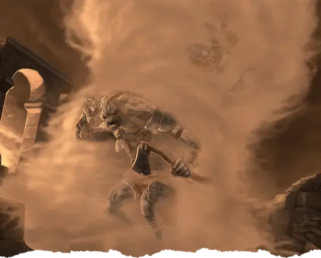

Смерч
Whirlwind
7 уровень, Воплощение

Время сотворения 1 действие
Дистанция 300 футов
Компоненты С, М (соломинка)
Длительность Концентрация, вплоть до 1 минуты
Классы Волшебник, Друид, Чародей
В указанной вами точке на поверхности земли возникает ревущий смерч. Он представляет собой цилиндр с радиусом 10 футов и высотой 30 футов. Пока заклинание действует, вы можете действием переместить его на расстояние до 30 футов в любом направлении вдоль земли. Смерч засасывает любые предметы с размером не больше Среднего, никем не носимые и не переносимые.
Существо должно совершить спасбросок Ловкости в момент, когда в первый раз за ход входит в область смерча или когда область смерча входит в пространство существа, включая момент первоначального возникновения смерча. При провале существо получает 10к6 дробящего урона, а при успехе — половину этого урона. Кроме того, существо с размером не больше Большого, провалившее спасбросок, должно преуспеть в спасброске Силы, иначе будет опутано смерчем на время действия заклинания. В начале каждого хода опутанное существо подтягивается на 5 футов вверх, пока не окажется на вершине смерча. Опутанное существо перемещается вместе со смерчем и падает на землю, когда заклинание заканчивается, если у него нет возможности остаться в воздухе.
Опутанное существо может действием совершить проверку Силы или Ловкости против Сл ваших заклинаний. В случае успеха оно перестаёт быть опутанным и вылетает из смерча на 3к6 × 10 футов в случайном направлении.